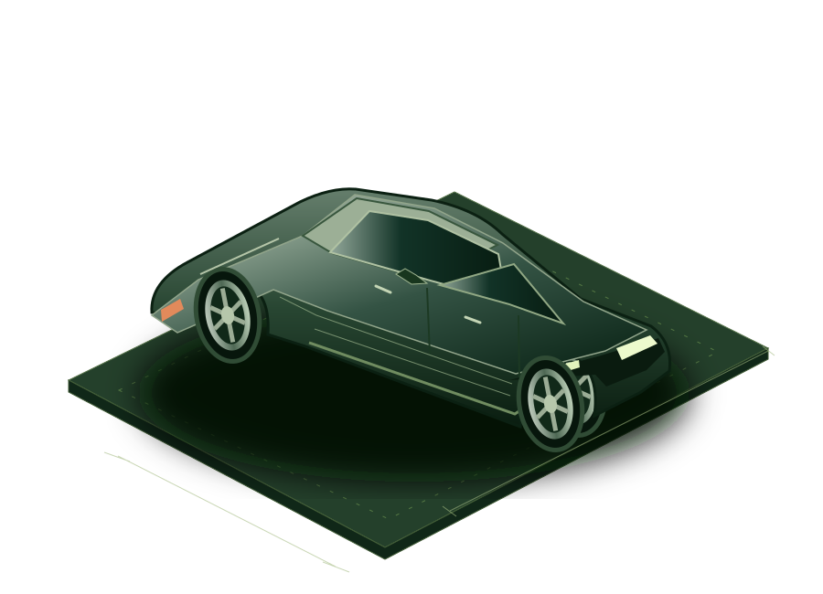

Décrivez votre besoin
Préparez la marque, le modèle, la motorisation et le kilométrage de votre véhicule.
VIDANGE & ENTRETIEN AUTOMOBILE

01 — NOS PRESTATIONS
Un besoin d’entretien ?
Commencez par un échange avec l’atelier.
Prestation, disponibilité et devis à confirmer auprès du garage. Aucun tarif inventé.
02 — L’ATELIER
Sur la rocade Imama à Mansourah, l’atelier est identifié pour la vidange et l’entretien automobile. Un accès face à la clinique Lazouni.
Découvrir la page Facebook ↗03 — AVANT DE VENIR
Trois repères pour préparer votre visite.
Préparez la marque, le modèle, la motorisation et le kilométrage de votre véhicule.
Appelez pour vérifier la prestation, les horaires et le délai avant de venir.
Retrouvez l’atelier sur la rocade Imama, face à la clinique Lazouni.
EN IMAGES
04 — ON SE RETROUVE ICI
Ouvrir Google Maps ↗À SAVOIR
Non. Aucun formulaire ni aucune réservation n’est transmis au garage. Contactez directement l’atelier.
Ils ne sont pas publiés ici. Demandez un devis à l’atelier en précisant votre modèle et votre besoin.
Sur la rocade Imama, face à la clinique Lazouni, à Mansourah — Tlemcen. Le bouton Google Maps ouvre la fiche fournie.